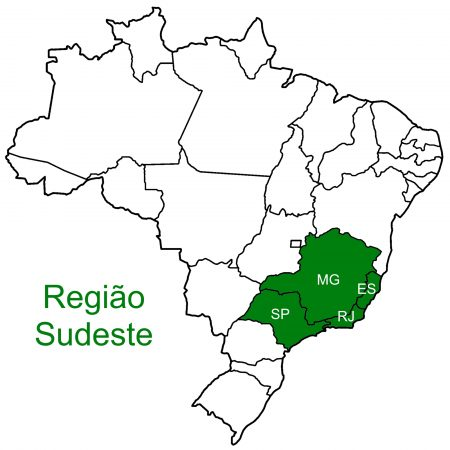
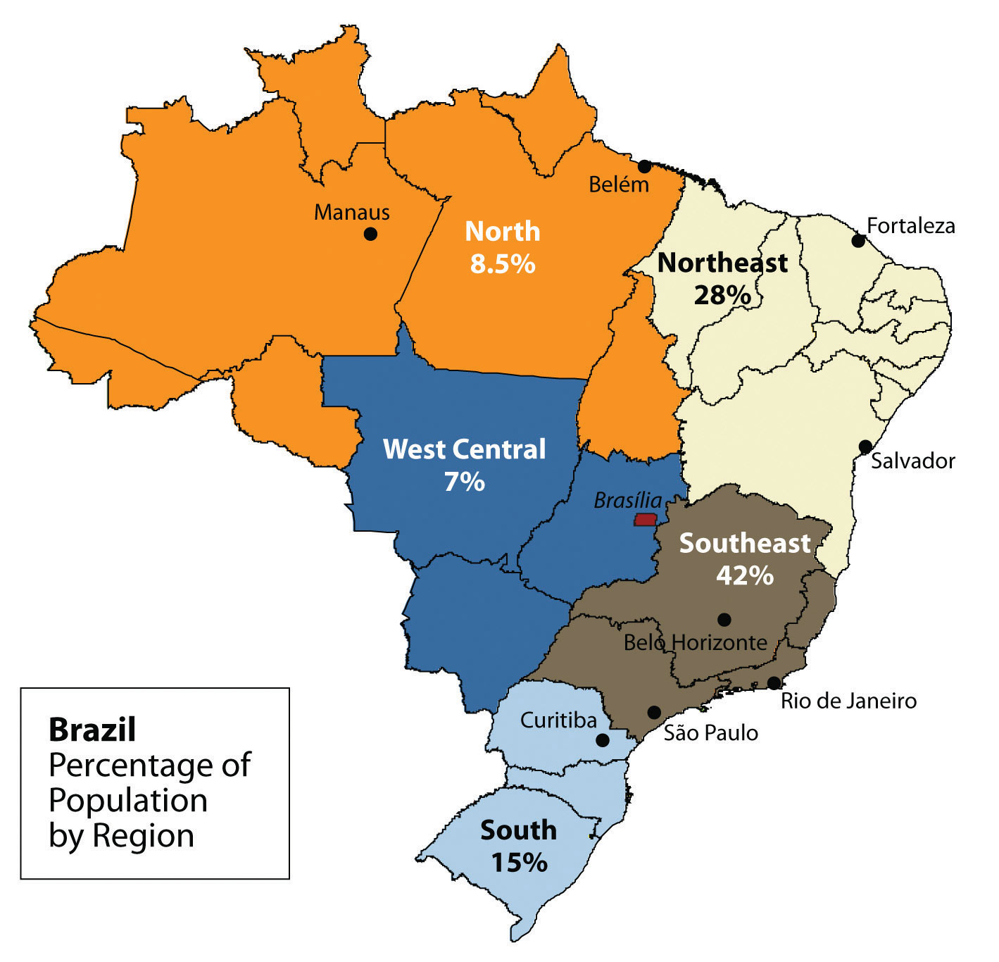

Regiones

Region Noreste
La Región Nordeste es la región brasileña que posee la mayor cantidad de estados: Alagoas, Bahía, Ceará, Maranhão, Paraíba, Piauí, Pernambuco (incluyendo el Distrito Estatal de Fernando de Noronha), Río Grande del Norte y Sergipe.

Region Sudeste
La región Sudeste de Brasil se compone de cuatro estados: São Paulo, Minas Gerais, Río de Janeiro y Espírito Santo.
Region Centro-Oeste
La región Centro-Oeste de Brasil está compuesta por tres estados Distrito Federal,Goiás y Mato Grosso
Region Norte
La Región Nordte esta conformado por:Acre, Amapá, Amazonas, Pará , Rondônia, Roraima, Tocantins
